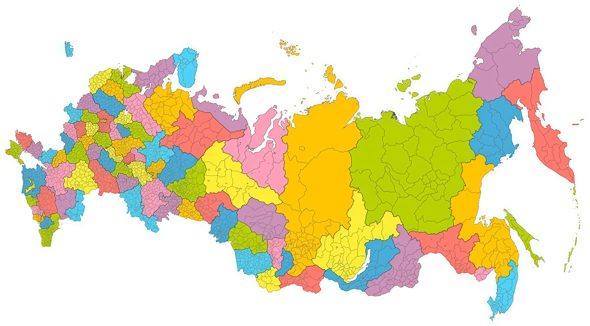

Родина героев
Наведи на золотые точки, чтобы узнать, откуда родом великие космонавты и авиаконструкторы

Смоленская обл.Юрий Гагарин
Марина Попович
Марина Попович
Москва и область
Владимир Комаров
Светлана Савицкая
Елена Кондакова
Владислав Волков
Сергей Королёв
Валентина Гризодубова
Павел Попович
Иван Кожедуб
Георгий Добровольский
Светлана Савицкая
Елена Кондакова
Владислав Волков
Сергей Королёв
Валентина Гризодубова
Павел Попович
Иван Кожедуб
Георгий Добровольский
Тверская обл.Андрей Туполев
Михаил Громов
Михаил Громов
Ярославская обл.Валентина Терешкова
ЧувашияАндриян Николаев
Алтайский крайГерман Титов
Кемеровская обл.Алексей Леонов
Нижегородская обл.Валерий Чкалов
Пётр Нестеров
Пётр Нестеров
Тульская обл.Валерий Поляков
Ленинградская обл. / СПбСергей Крикалёв
Игорь Сикорский
Игорь Сикорский
Краснодарский крайГеннадий Падалка
Григорий Бахчиванджи
Владимир Коккинаки
Григорий Бахчиванджи
Владимир Коккинаки
КрымАмет-хан Султан
Новосибирская обл.Александр Покрышкин
Приморский крайЕлена Серова
БеларусьПавел Сухой
КазахстанВиктор Пацаев
Тимур ЭнеевРодился в Чечне
Основную работу вёл в Москве
Основную работу вёл в Москве